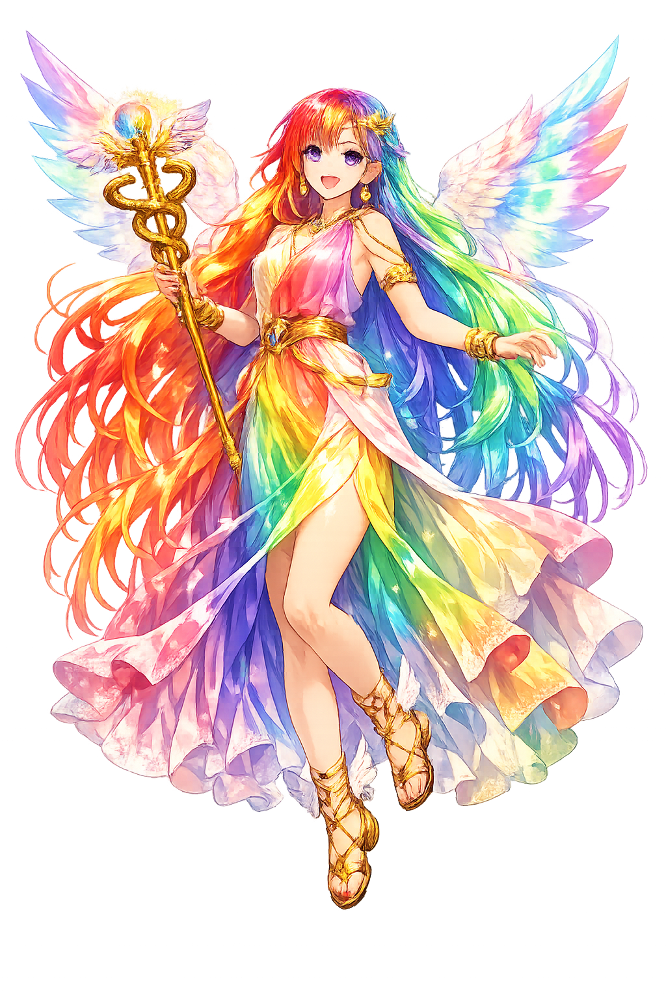

Unicode restoration and ASCII comparison
Ἶρις
The name in its original Greek form. Íris (Ἶρις) is attested in the source tradition — “Rainbow”. Its acute accents carry the full phonetic and orthographic weight of the source tradition.
iris
Reduced to plain iris, the name loses everything that made it specific: acute accents. What remains is an ASCII string that machines can parse but that no longer speaks with its original voice.
Íris
The Unicode restoration recovers what ASCII flattened. Íris restores acute accents, returning the name to its original written dignity. The domain encodes to Punycode, but the browser displays the truth.
Íris.com → xn--ris-qma.com
The non-ASCII characters in Íris are encoded while the ASCII remains visible. To the DNS, it is Punycode. To humanity, it is Íris.
How Íris is preserved in writing
A bespoke provenance study for Íris is being prepared by the PUNICODEX scholarly team.
Contribute scholarly provenance →How Íris was spoken
Messenger of the Gods, Oaths, Thresholds
Îris is the personification of the rainbow and the messenger of the gods in the earliest Greek poetry. She runs on the clouds with golden wings, bearing commands, summons, and warnings between Olympus, earth, and sea.
In the Iliad she carries Zeus's orders to gods and mortals with unerring speed.
Her body is the bridge of colors linking heaven and earth, sea and sky.
Golden wings on her shoulders and swift feet carry her across land and sea.
She draws water from the Styx for divine oaths, making perjury impossible for gods.
Stories of Íris
Îris is a function more than a character in early epic: she goes where she is sent. Yet her appearances are dramatic, and she occasionally shows judgment and pity.
In the Iliad, Iris carries Zeus's commands to Achilles, Athena, Hera, and Poseidon. When the gods quarrel, she is the voice that enforces the king's will. She also warns Priam not to mourn too loudly and escorts the old king to Achilles' tent.
When Achilles threatens to attack Agamemnon directly, Athena descends to restrain him, but Iris is also sent by Hera to urge him not to draw his sword. Achilles recognizes her and obeys — one of the rare moments when a mortal heeds a divine messenger instantly.
Later poets and vase painters show Iris actively involved in the Trojan War: she warns Helen, summons the winds, and in some versions delivers the message that draws Achilles back to battle after Patroklos's death.
Iris is the god of the in-between. She does not belong to Olympus alone or to earth alone but to the arc that connects them. Her existence is relational: without sender and receiver, without storm and sunlight, there is no rainbow.
Enter Extended Lore